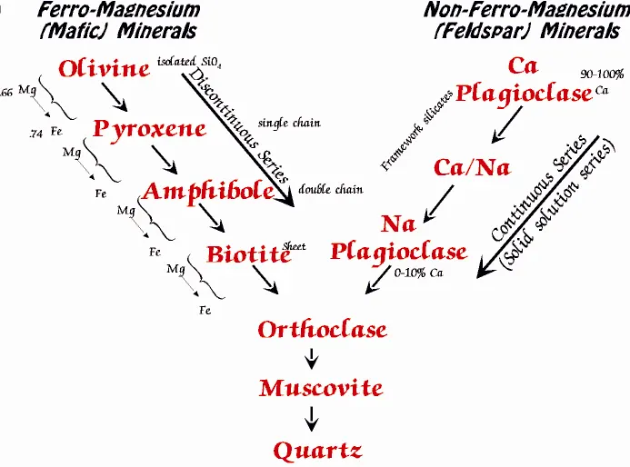
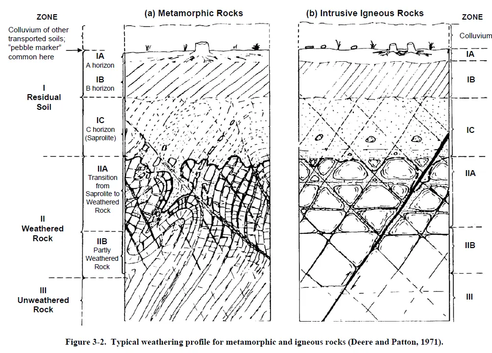
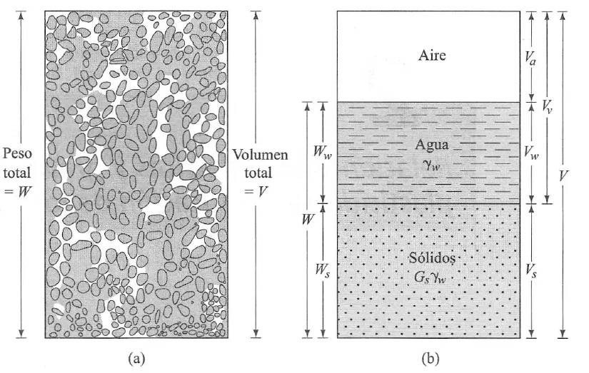
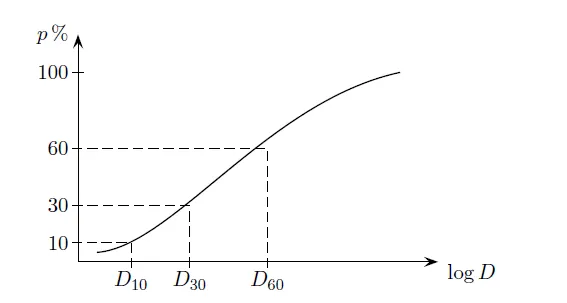
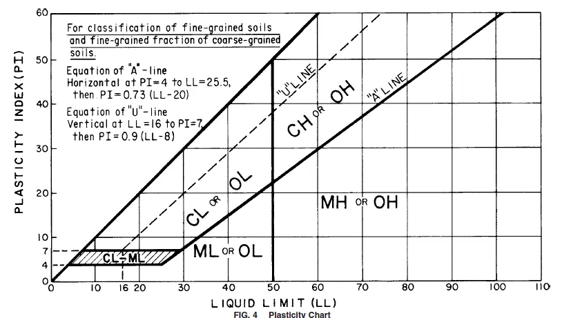

Mecánica de suelos: origen, descripción y clasificación#
Importante
Objetivos de aprendizaje
Relacionar el origen geológico de un suelo (residual o transportado) con su comportamiento ingenieril.
Describir un perfil de meteorización con las clasificaciones de Dearman y de Deere y Patton.
Reconocer los minerales de arcilla y su influencia en la plasticidad y el cambio de volumen.
Calcular las relaciones de fase de un suelo.
Clasificar un suelo con la granulometría, los límites de Atterberg y el Sistema Unificado (USCS).
¿Qué es un suelo?#
La palabra suelo tiene significados distintos según quien la use. Para el edafólogo es el material terrestre alterado por procesos físicos, químicos y biológicos que permite el desarrollo de la vida vegetal: un cuerpo natural organizado en horizontes. Para el ingeniero es, de manera pragmática, cualquier material terrestre que se puede excavar sin explosivos, un agregado de partículas sólidas con vacíos llenos de agua y aire. El geólogo combina ambas visiones: el suelo es un producto de la meteorización de las rocas, que puede permanecer en el sitio donde se formó o haber sido transportado, y cuyas propiedades heredan la historia de ese origen.
Esta visión geológica no es un detalle académico. Dos suelos con la misma granulometría y los mismos límites de Atterberg pueden comportarse de manera muy diferente si uno es un depósito aluvial normalmente consolidado y el otro un saprolito con las diaclasas de la roca parental todavía presentes. Los ensayos de laboratorio sobre muestras pequeñas no capturan esas estructuras; la descripción geológica sí.
Meteorización#
La meteorización es el proceso de alteración y separación de la roca y de los materiales del suelo sobre y cerca de la superficie terrestre, por descomposición química o desintegración física [Anon, 1995]. Ocurre porque los minerales que se formaron en condiciones de alta presión y temperatura son inestables en el ambiente superficial, con agua, oxígeno y dióxido de carbono abundantes.

Figura 5 La meteorización transforma la roca en suelo como respuesta al desequilibrio entre las condiciones de formación de los minerales y el ambiente superficial.#
Se distinguen dos tipos de meteorización. La mecánica desintegra la roca sin cambiar su composición: reduce el tamaño de los fragmentos por expansión térmica, crecimiento de cristales de sal o hielo, descompresión o acción de las raíces. La química descompone los minerales y altera la composición química y mineralógica: la hidrólisis de los feldespatos produce minerales de arcilla, la oxidación libera hierro y la disolución remueve los cationes más móviles. En ambientes tropicales húmedos como los Andes colombianos predomina la meteorización química, y los perfiles de alteración pueden alcanzar decenas de metros de espesor.
Los factores que controlan la meteorización son el clima (precipitación y temperatura), la litología (mineralogía, textura, estructura y enlaces minerales), la topografía y el drenaje, que determinan el tiempo de residencia del agua, la biosfera y el tiempo. La serie de Goldich ordena los silicatos según su susceptibilidad a la meteorización, que es la inversa del orden de cristalización de la serie de Bowen: el olivino y la plagioclasa cálcica se alteran rápidamente, mientras que el cuarzo es casi inalterable. La movilidad relativa de los cationes durante la meteorización sigue el orden Ca > Na > Mg > K > Si > Fe > Al, por lo que los perfiles muy meteorizados se empobrecen en bases y se enriquecen en hierro y aluminio.


Figura 6 Susceptibilidad de los silicatos a la meteorización (serie de Goldich).#
El grado de meteorización se cuantifica con índices químicos que comparan la proporción de elementos móviles e inmóviles, como el índice químico de alteración (CIA) de Nesbitt and Young [1982]. En suelos residuales del Valle de Aburrá, Aristizábal et al. [2005] mostraron que estos índices permiten diferenciar los horizontes del perfil y seguir la evolución desde la roca fresca hasta el suelo residual en granitoides y anfibolitas.
Suelos residuales y transportados#
Los suelos residuales se forman por meteorización in situ y permanecen sobre la roca de la que derivan. Los suelos transportados fueron movilizados por la gravedad (coluviones), el agua (aluviones, depósitos lacustres y marinos), el viento (loess, dunas), el hielo (morrenas) o la actividad volcánica (cenizas y flujos piroclásticos), y se depositaron en un sitio diferente al de su origen.

Figura 7 Suelos residuales, formados por meteorización in situ, y suelos transportados, formados por meteorización seguida de transporte.#
Esta distinción tiene consecuencias directas. Los suelos transportados suelen estar estratificados, con propiedades relativamente homogéneas dentro de cada capa y una historia de esfuerzos que se puede reconstruir con la teoría de la consolidación. Los suelos residuales, en cambio, presentan una variación gradual de propiedades con la profundidad, conservan con frecuencia estructuras heredadas de la roca (diaclasas, foliación, venas, diques) que actúan como planos de debilidad, y su resistencia proviene en buena parte de la cementación y de la succión, no de la historia de carga. Por eso los conceptos de consolidación normal o sobreconsolidación, desarrollados para arcillas sedimentarias, no se aplican directamente a los suelos residuales tropicales [Wesley, 2010].
Perfil de meteorización#
El perfil de un suelo es la sección vertical del terreno constituida por una secuencia de horizontes separables por sus características morfológicas, físicas, químicas y mineralógicas. En un perfil típico de meteorización en roca cristalina se reconocen, de arriba hacia abajo, el suelo residual, en el que se ha perdido toda la estructura de la roca; el saprolito, que conserva la fábrica y las estructuras de la roca aunque esta se ha descompuesto a un material que se puede excavar; la roca meteorizada, en la que bloques de roca se separan por zonas alteradas; y la roca parental fresca. El conjunto de los materiales sobre la roca fresca se denomina regolito. La frontera entre lo que se estudia con la mecánica de suelos y lo que se estudia con la mecánica de rocas cae dentro de este perfil y suele ser difusa.
Las dos clasificaciones más usadas son la de Dearman, adoptada por la Sociedad Geológica de Londres [Anon, 1995], y la de Deere and Patton [1971].

Figura 8 Perfil de meteorización de un suelo residual tropical según la clasificación de Dearman. Fuente: Anon (1990).#


Figura 9 Perfil de meteorización según Deere y Patton (1971).#
Dearman |
Deere y Patton (1971) |
Zona |
|---|---|---|
VI. Suelo residual: sin estructura ni fábrica de la roca parental |
IA. Suelo residual con materia orgánica; IB. Suelo residual sin estructura heredada |
Suelo residual |
V. Completamente meteorizada: conserva estructura y fábrica |
IC. Saprolito: conserva estructura y fábrica |
Suelo saprolítico |
IV. Muy meteorizada: menos de 50 % de bloques |
IIA. Transición entre saprolito y roca meteorizada |
Roca meteorizada |
III. Moderadamente meteorizada: más de 50 % de bloques |
IIA |
Roca meteorizada |
II. Ligeramente meteorizada: decoloración |
IIB. Roca parcialmente meteorizada |
Roca meteorizada |
I. Roca fresca |
III. Roca sin meteorizar |
Roca parental |
Implicaciones geotécnicas del perfil
La zona de transición (grados IV y III, o IIA) es la más problemática: combina bloques de roca resistente con una matriz débil y permeable, concentra el flujo de agua subterránea y es el nivel donde se ubica con frecuencia la superficie de falla de los deslizamientos en suelos residuales. Los sondeos con recuperación baja en esta zona deben interpretarse con cuidado, porque lo que no se recupera suele ser justamente el material más débil.
La catena#
La catena describe la variación lateral de los suelos a lo largo de una ladera, desde la divisoria hasta el fondo del valle, como resultado de la posición topográfica, el drenaje y el transporte de materiales. En la parte alta, bien drenada, predominan los suelos residuales delgados; en la ladera media actúan la erosión y los movimientos en masa; y en la base se acumulan los coluviones y los aluviones, con drenaje deficiente. La catena recuerda que el perfil de suelo no es una propiedad de un punto sino de un paisaje, y que su espesor y composición cambian sistemáticamente con la geomorfología.

Figura 10 Ladera con suelo sobre roca: flujos de agua y variación del perfil a lo largo de la pendiente (catena).#
Los minerales de arcilla#
Las arcillas son productos de la meteorización con partículas generalmente menores de 2 µm, constituidas por aluminosilicatos hidratados de origen secundario cuyo comportamiento está dominado por la actividad electroquímica de su superficie. Su estructura cristalina se construye con dos unidades básicas: láminas de tetraedros de sílice y láminas de octaedros de alúmina o magnesia. La forma en que se apilan estas láminas define los grupos principales.
La caolinita (estructura 1:1) se forma por meteorización de los feldespatos en condiciones de precipitación abundante y alta temperatura, típicas del trópico húmedo. Sus láminas están unidas por enlaces de hidrógeno fuertes, por lo que tiene baja absorción de agua y baja susceptibilidad a la expansión y la retracción. La haloisita, del mismo grupo, es frecuente en suelos derivados de rocas volcánicas y cenizas.
La illita (estructura 2:1) resulta de la meteorización de las micas. Los iones de potasio entre las láminas limitan la entrada de agua, de modo que su actividad es intermedia.
La montmorillonita (grupo de las esmectitas, estructura 2:1) se forma en ambientes con drenaje deficiente y abundancia de bases, con frecuencia a partir de la plagioclasa en depósitos de ceniza volcánica. Los enlaces débiles entre láminas permiten la entrada de agua, lo que produce un aumento de volumen considerable. Los suelos ricos en esmectitas son expansivos y tienen resistencia residual muy baja, con ángulos de fricción que pueden caer por debajo de 10°.

Figura 11 Estructura de los minerales de arcilla a partir de láminas tetraédricas y octaédricas.#
Relaciones de fase#
Un suelo es un sistema de tres fases: sólidos, agua y aire. Para describirlo se separan idealmente las fases en un diagrama en el que se indican los volúmenes y los pesos de cada una.


Figura 12 Diagrama de fases de un suelo. Fuente: Das (2001).#
Las relaciones volumétricas más usadas son la relación de vacíos, la porosidad y el grado de saturación:
La relación gravimétrica fundamental es el contenido de agua o humedad, \(w=W_w/W_s\), y la densidad de los sólidos se expresa con la gravedad específica \(G_s=\gamma_s/\gamma_w\), que para la mayoría de los suelos minerales está entre 2,60 y 2,80. Estas variables se relacionan mediante la ecuación \(S\,e = w\,G_s\), y los pesos unitarios se expresan como:
En los suelos granulares el estado de compacidad se describe con la densidad relativa, que compara la relación de vacíos natural con los valores máximo y mínimo que el suelo admite:
Ejemplo resuelto: relaciones de fase
Una muestra de arena de terraza aluvial tiene un peso unitario húmedo \(\gamma=18{,}0\) kN/m³, una humedad \(w=12\,\%\) y una gravedad específica \(G_s=2{,}65\). En laboratorio se determinaron \(e_{max}=0{,}85\) y \(e_{min}=0{,}45\). Calcule \(\gamma_d\), \(e\), \(n\), \(S\) y \(D_r\).
Peso unitario seco: \(\gamma_d=\gamma/(1+w)=18{,}0/1{,}12=16{,}07\) kN/m³.
Relación de vacíos: de \(\gamma_d=G_s\gamma_w/(1+e)\) se obtiene \(e=G_s\gamma_w/\gamma_d-1=2{,}65\times9{,}81/16{,}07-1=0{,}618\).
Porosidad: \(n=e/(1+e)=0{,}618/1{,}618=0{,}382\).
Grado de saturación: \(S=wG_s/e=0{,}12\times2{,}65/0{,}618=0{,}515\), es decir, 51,5 %.
Densidad relativa: \(D_r=(0{,}85-0{,}618)/(0{,}85-0{,}45)=0{,}58\). La arena está en estado medianamente denso.
Granulometría#
La distribución del tamaño de las partículas se determina por tamizado para la fracción gruesa (mayor de 0,075 mm, tamiz N.º 200) y por sedimentación (hidrómetro) para la fracción fina. El resultado se presenta como una curva granulométrica del porcentaje que pasa en función del diámetro, en escala logarítmica.


Figura 13 Curva granulométrica y diámetros característicos.#
De la curva se obtienen los diámetros por debajo de los cuales está el 10, 30 y 60 % del material (\(D_{10}\), \(D_{30}\) y \(D_{60}\)), con los que se calculan el coeficiente de uniformidad y el de curvatura:
Un suelo está bien gradado cuando tiene una amplia gama de tamaños (\(C_u>4\) para gravas o \(C_u>6\) para arenas, y \(1\le C_c\le3\)). Para el ingeniero un suelo bien gradado tiene un mejor comportamiento, porque las partículas pequeñas llenan los vacíos entre las grandes. Para el geólogo ese mismo suelo está mal seleccionado: la terminología es opuesta y conviene no confundirla. La forma de la curva tiene además un significado genético. Las arenas eólicas y de playa son uniformes, los depósitos glaciares y los coluviones son muy bien gradados, y los suelos residuales suelen presentar curvas extendidas que reflejan la descomposición progresiva de los granos.
Plasticidad y límites de Atterberg#
La consistencia de un suelo fino, es decir, su resistencia a fluir, depende de su contenido de agua. Atterberg definió los contenidos de humedad en las transiciones entre estados: el límite líquido (\(LL\)) separa el estado líquido del plástico, el límite plástico (\(LP\)) separa el plástico del semisólido, y el límite de contracción (\(LC\)) marca el contenido de agua por debajo del cual el suelo ya no reduce su volumen al secarse. Se determinan sobre la fracción que pasa el tamiz N.º 40 (0,425 mm).
A partir de los límites se definen el índice de plasticidad, el índice de liquidez y la actividad:
La actividad, propuesta por Skempton (1953), es una medida aproximada de la superficie específica de las partículas y, por tanto, del tipo de mineral de arcilla: la caolinita tiene actividades del orden de 0,4, la illita cerca de 0,9 y la montmorillonita sódica valores superiores a 4. Un índice de liquidez cercano o superior a 1 indica que el suelo está en su estado natural con una humedad próxima al límite líquido, típico de arcillas sensibles que pierden gran parte de su resistencia al ser remoldeadas. La sensibilidad se define como el cociente entre la resistencia a la compresión inconfinada inalterada y la remoldeada.


Figura 14 Carta de plasticidad de Casagrande.#
Sistema Unificado de Clasificación de Suelos (USCS)#
El USCS (ASTM D2487) asigna a cada suelo un símbolo de dos letras. La primera indica el tipo principal: G (grava), S (arena), M (limo), C (arcilla), O (orgánico) y Pt (turba). La segunda indica la gradación en los suelos gruesos (W, bien gradado; P, mal gradado) o la plasticidad en los finos (L, baja, con \(LL<50\); H, alta, con \(LL\ge50\)). Un suelo es grueso si más del 50 % queda retenido en el tamiz N.º 200, y fino en caso contrario. Los suelos finos se clasifican con la carta de plasticidad: los puntos por encima de la línea A, \(IP=0{,}73\,(LL-20)\), corresponden a arcillas, y los que están por debajo a limos.
Ejemplo resuelto: clasificación USCS
Un suelo residual de anfibolita tiene 68 % de finos, \(LL=45\) y \(LP=25\). Clasifíquelo.
Como más del 50 % pasa el tamiz N.º 200, es un suelo fino. \(IP=45-25=20\). En la línea A, para \(LL=45\), \(IP_A=0{,}73\,(45-20)=18{,}3\). Como \(IP=20>18{,}3\) y \(LL<50\), el suelo es una arcilla de baja plasticidad, CL.
Una advertencia para suelos residuales: el secado previo de la muestra puede cambiar los límites de forma irreversible, en especial en suelos con haloisita o alófano derivados de cenizas volcánicas. Los ensayos deben hacerse desde la humedad natural.
Suelos con comportamiento especial#
Algunos suelos requieren atención particular porque su comportamiento no se describe bien con los parámetros convencionales. Los suelos colapsables sufren una disminución rápida de volumen al aumentar su contenido de agua bajo carga. Se caracterizan por una estructura macroporosa, con relación de vacíos alta, granulometría predominantemente fina con limos y arcillas, y una fábrica de partículas mayores separadas por espacios abiertos y unidas por puentes de arcilla o sales solubles [Reginatto, 1977]. Los loess, algunos suelos residuales muy lixiviados y ciertos depósitos de cenizas volcánicas pertenecen a este grupo. Los suelos expansivos, ricos en esmectitas, cambian de volumen con los ciclos de humedecimiento y secado y dañan cimentaciones livianas y pavimentos. Las arcillas sensibles pierden su resistencia al ser remoldeadas. La NSR-10 trata estos casos en el capítulo H.9.
Lecturas recomendadas#
Ejercicios#
Una muestra saturada de arcilla tiene \(w=38\,\%\) y \(G_s=2{,}70\). Calcule \(e\), \(\gamma_{sat}\) y \(\gamma'\).
Dibuje un perfil de meteorización de un granitoide en clima tropical húmedo, indique las zonas según Dearman y señale dónde esperaría la superficie de falla de un deslizamiento.
Un suelo tiene \(LL=62\) y \(LP=30\), con 85 % de finos y 30 % de partículas menores de 2 µm. Clasifíquelo según el USCS y estime el mineral de arcilla dominante a partir de su actividad.